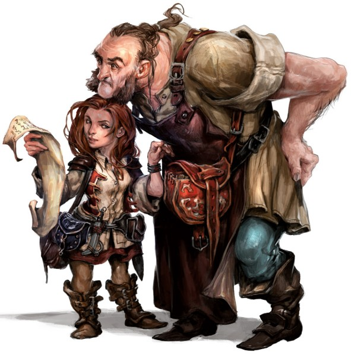

Le confort à la maison est ce à quoi aspirent la plupart des halfelins : un endroit où s’installer dans une paix sereine, loin des monstres errants et des confrontations armées ; un feu ardent et un repas copieux ; un breuvage fin et une conversation raffinée. Bien que certains halfelins vivent leurs jours isolés dans des communautés agricoles, d’autres forment des bandes nomades en constant déplacement, attirés par les grands chemins et les vastes horizons pour découvrir les merveilles de nouvelles terres et de nouveaux peuples. Mais même ces itinérants aiment la paix, la nourriture, un foyer et un chez-soi, même si ce chez-soi est un chariot cahotant sur une route poussiéreuse ou un radeau flottant au gré du courant.
Les tout petits halfelins survivent dans un monde rempli de créatures plus grandes qu’eux en évitant d’être remarqués ou en évitant les offenses. Mesurant près de 90 cm., ils paraissent plutôt inoffensifs et ainsi, ils ont réussi à survivre depuis des siècles à l’ombre des empires et en marge des guerres et des remous politiques. Ils ont tendance à être trapus, pesant entre 18 et 20 kg. Les halfelins ont un teint de peau variant de bronzé à pale avec un ton rougeaud. Leur chevelure est habituellement brune ou sablée et bouclée. Ils ont les yeux bruns ou de couleur noisette. Les hommes halfelins portent souvent de longues rouflaquettes, mais la barbe est rare et la moustache, encore plus. Ils aiment les vêtements simples, confortables et pratiques, préférablement de couleurs vives. Le pragmatisme des halfelins va au-delà de leur habillement. Ils se soucient des besoins de base et des plaisirs simples. Ils n’ont aucun intérêt à l’ostentation. Même le plus riche des halfelins garde ses trésors sous clé, dans un cellier plutôt qu’à la vue de tous. Ils ont un don pour trouver les solutions les plus simples aux problèmes et ont peu de patience pour l’indécision.
Les halfelins sont des gens affables, chaleureux et joyeux. Ils chérissent les liens de famille et l'amitié ainsi que le confort du foyer, n’entretenant que peu de rêves d'or et de gloire. Les plus téméraires parmi eux s'aventurent généralement dans le monde pour des raisons liées à la communauté, l’amitié, l’envie de voyager ou la curiosité. Ils aiment découvrir de nouvelles choses, même les plus simples, comme une nourriture exotique ou un style particulier de vêtements. Les halfelins sont aisément émus par la pitié et ils détestent voir la souffrance d’un être vivant. Ils sont généreux et partagent sans compter, même dans les temps plus difficiles.
Les halfelins sont aptes à s'insérer dans une communauté d'humains, de nains ou d’elfes, en se rendant utiles et bienveillants. La combinaison de leur discrétion innée et de leur nature modeste contribue à éviter une attention non désirée. Ils collaborent promptement avec les autres et sont très fidèles à leurs amis, qu’ils soient halfelins ou non. Mais ils peuvent aussi se montrer remarquablement féroces quand leurs amis, leurs familles ou leurs communautés sont menacés.